RTS read · matched ground crop plus reference intent
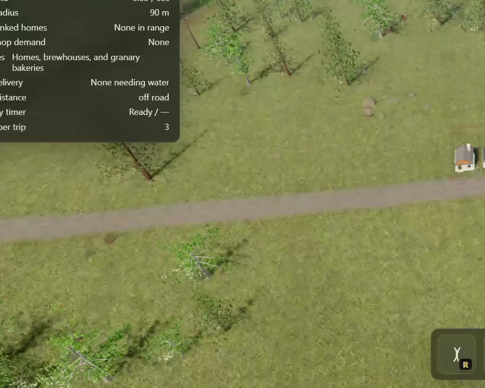
Reference intentBroad living field structure without woven grain.
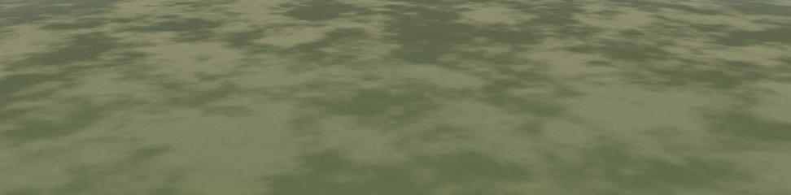
Before · fixed cropCamouflage-scale value patches.
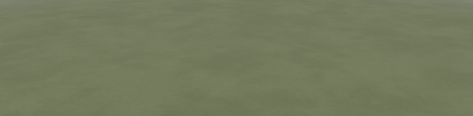
Final · same cropLower-amplitude macro field; no synthetic fibers.
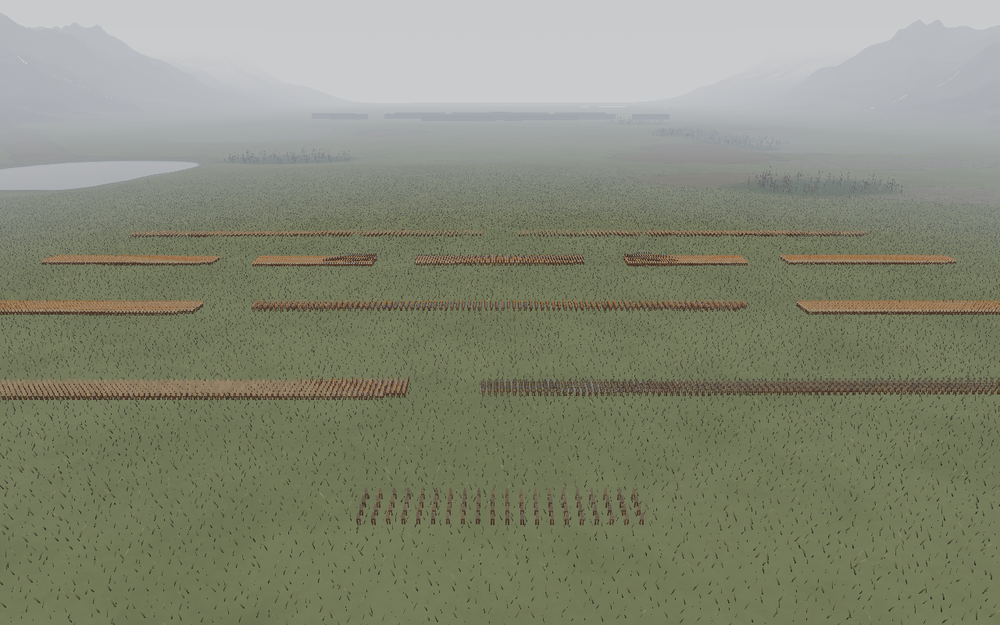
Final contextReal blades own the near field and formations stay readable.
Top-down read · matched production frame plus reference intent
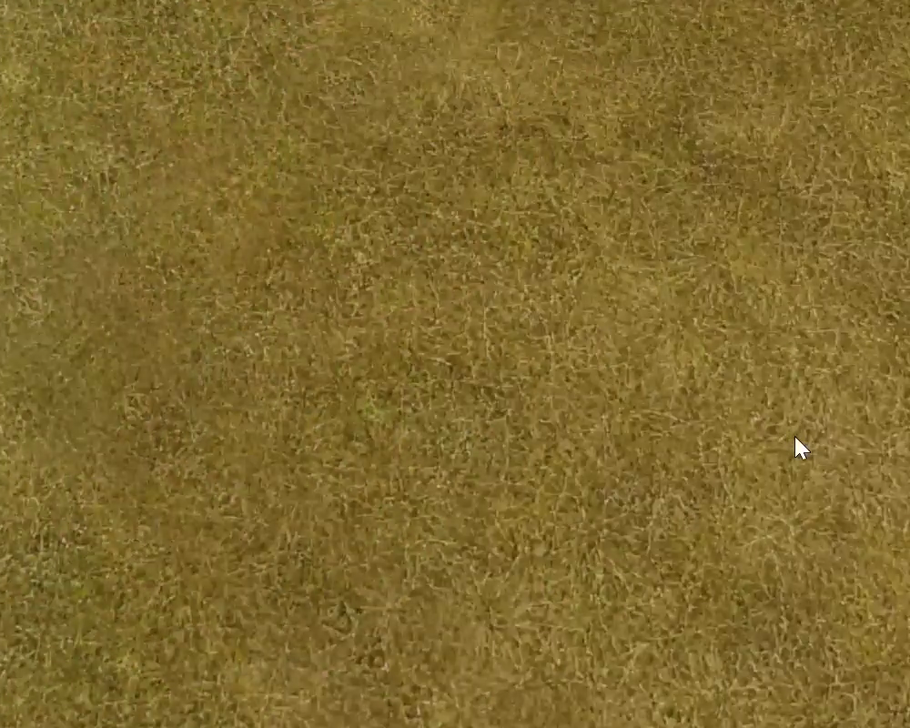
Reference intentFine irregularity without repeating weave.
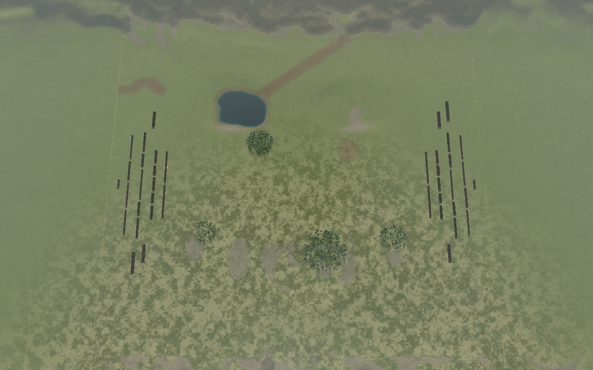
Before · fixed frameInherited open-ground palette and contrast.
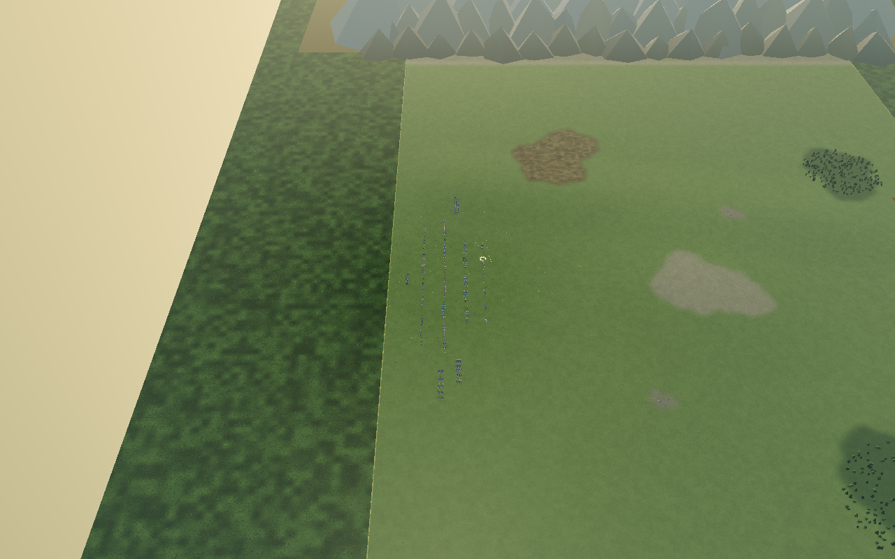
Final · same frameShared meadow palette with restrained macro variation.
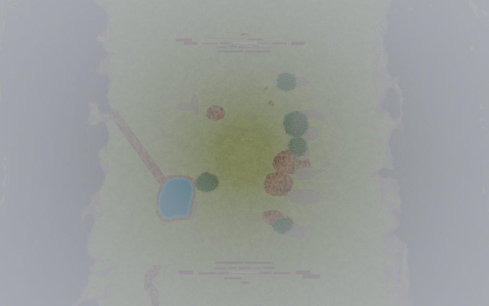
Final controlDedicated fixed-seed ownership frame.
Earth ownership · soft boundary, hard category
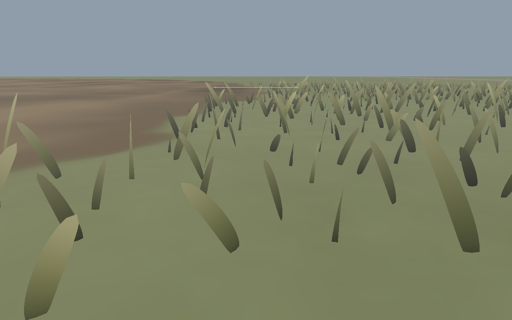
Mud edgeIrregular narrow feather without a dark halo.
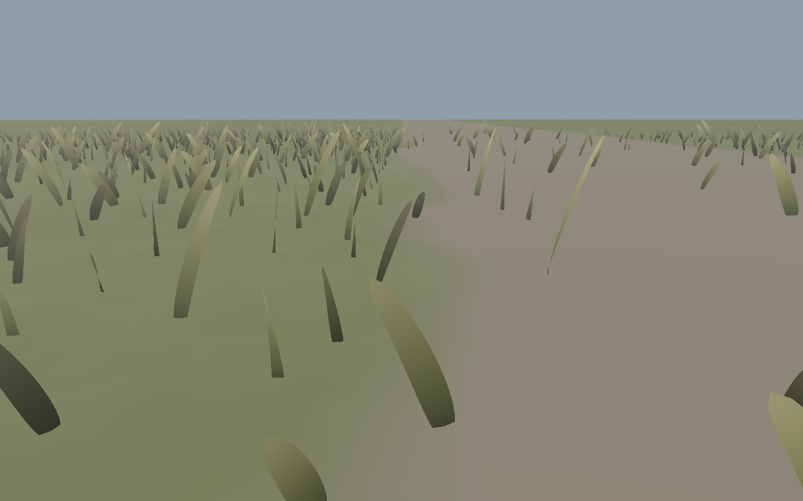
Road edgeNarrow grass spill without a dark halo.
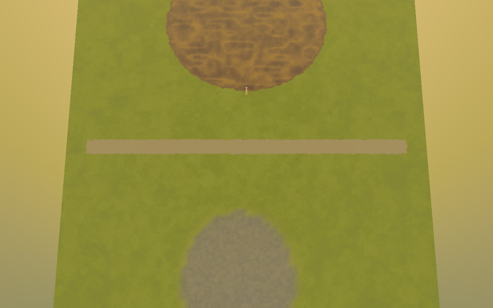
Category controlTop: mud. Middle: road. Bottom: scree. Only earth categories feather.
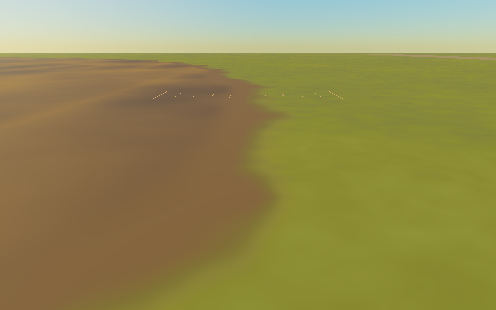
Width contextVisual companion to measured 1.747 m mud and 1.431 m road transitions.
World continuity · playable → vista → quad
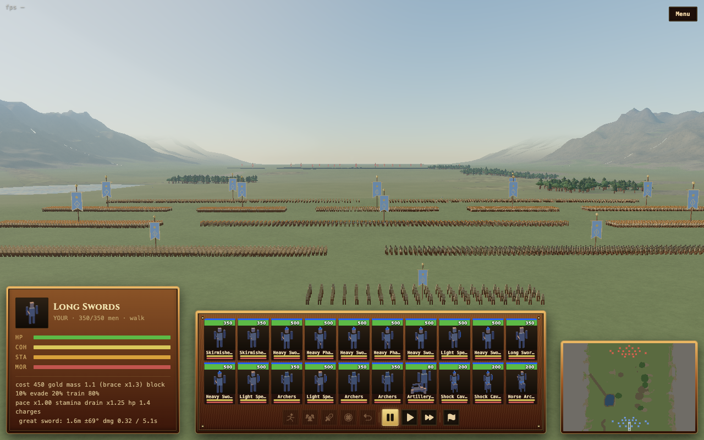
Golden full framePlayable ground, vista band, and distant quad remain legible as one world.
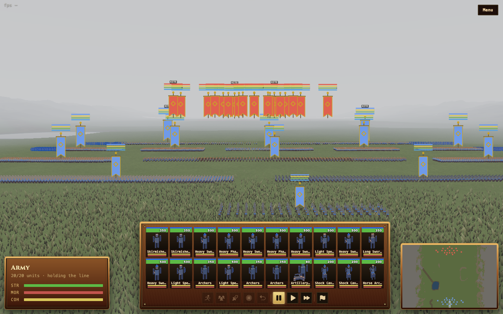
Overcast full frameThe same three-owner composition under flat light.
Lighting preservation and battle composition
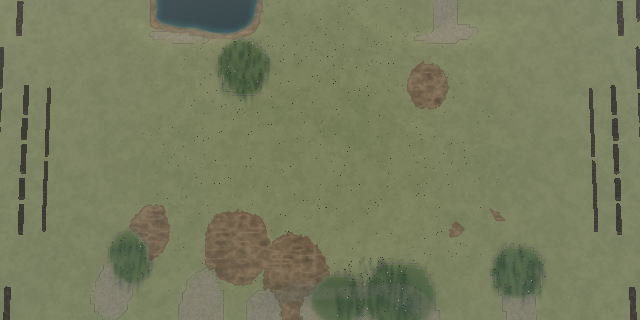
Golden hourWarm light remains the owner of time-of-day color.
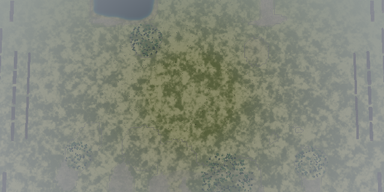
OvercastTurf holds value separation without camouflage noise.
Composed battleGround supports formations and distance read at the production camera.